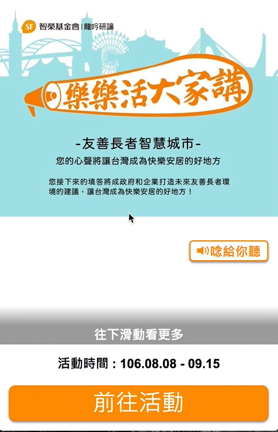
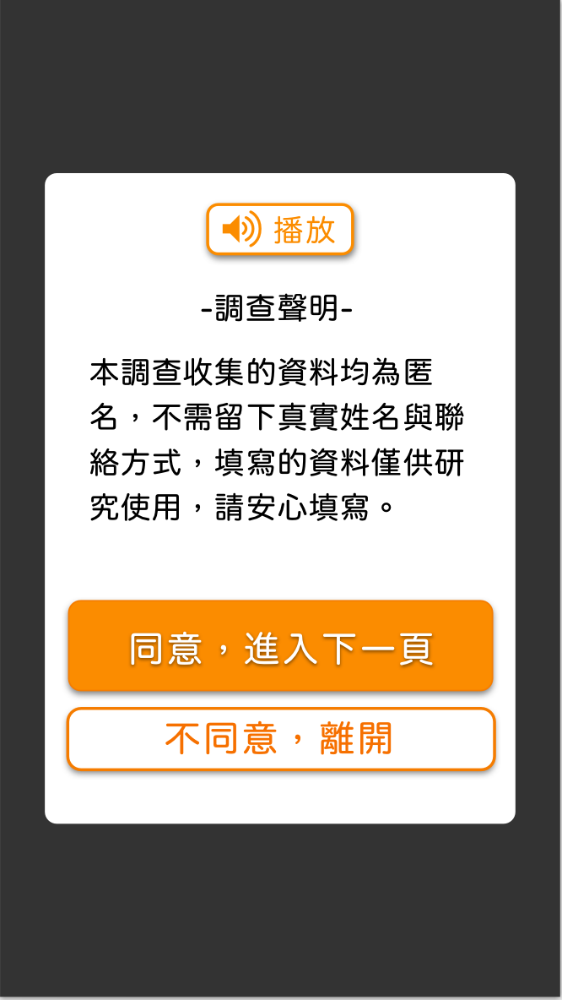
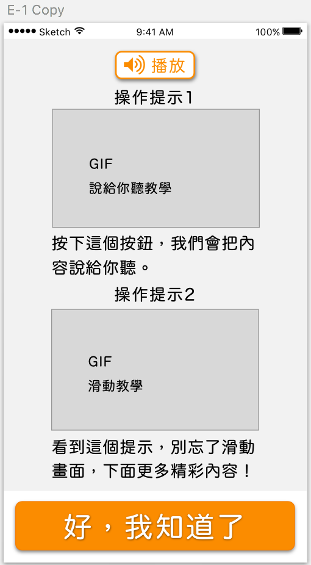
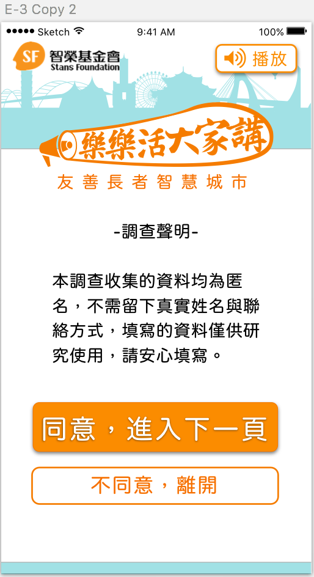
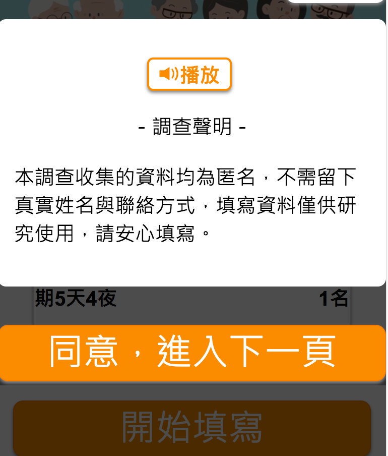
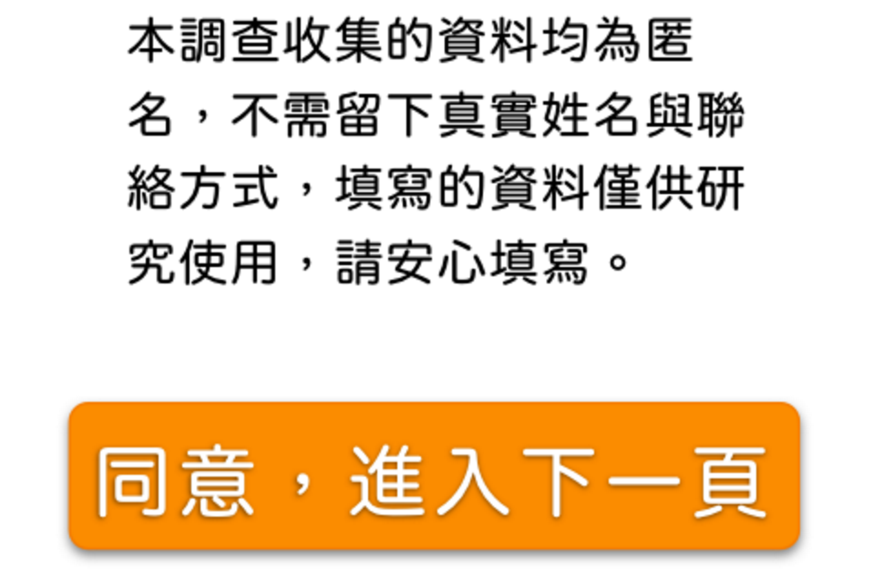
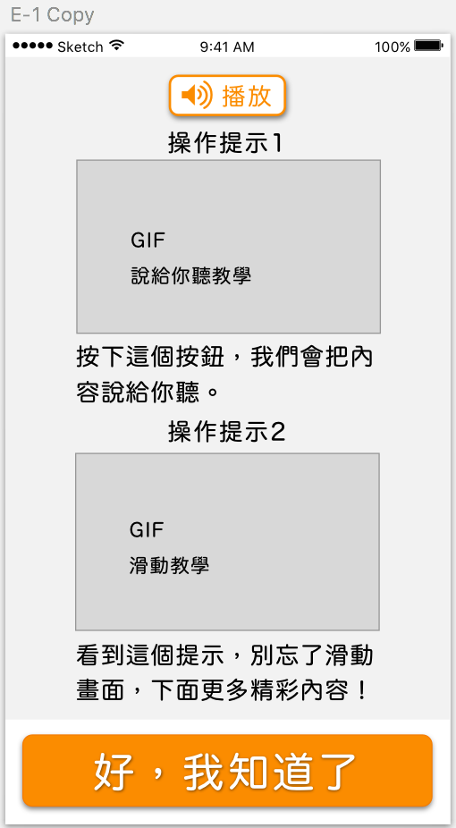
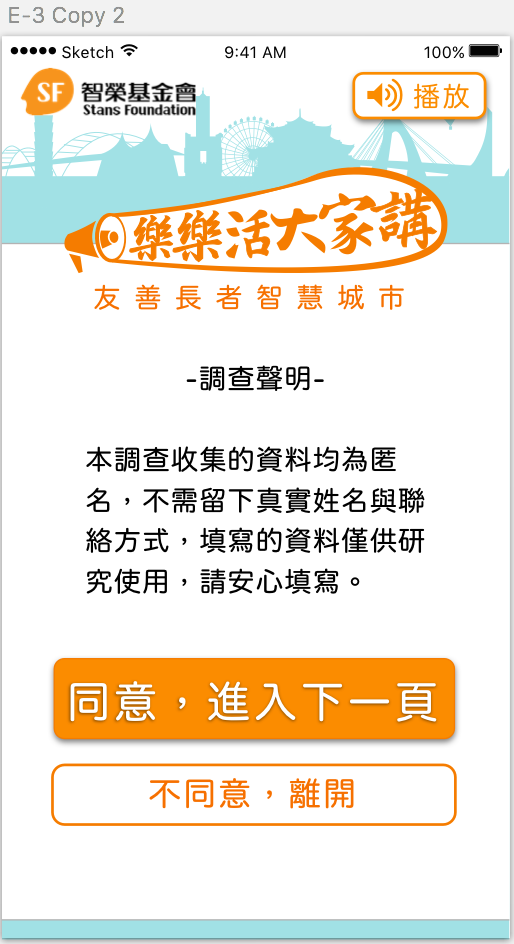
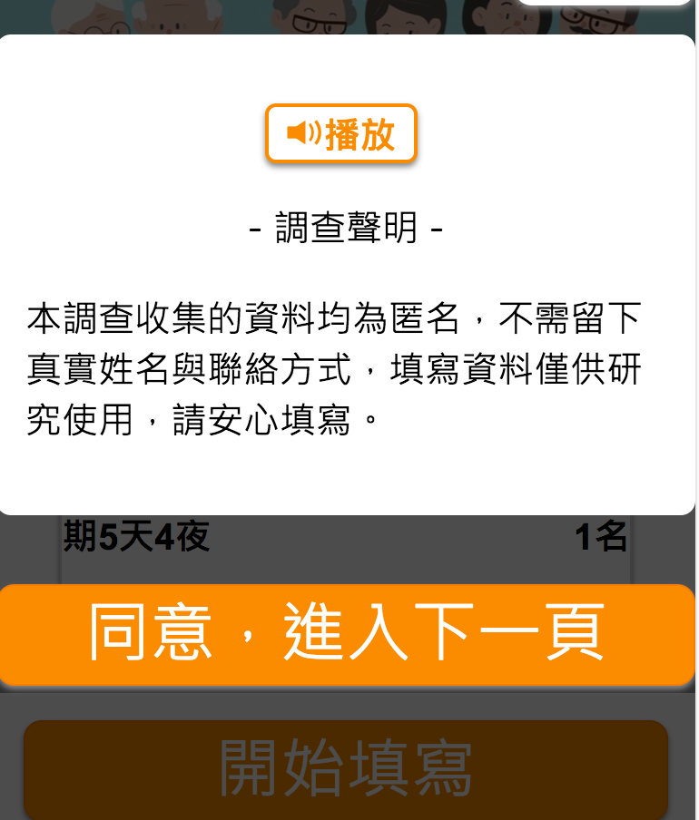
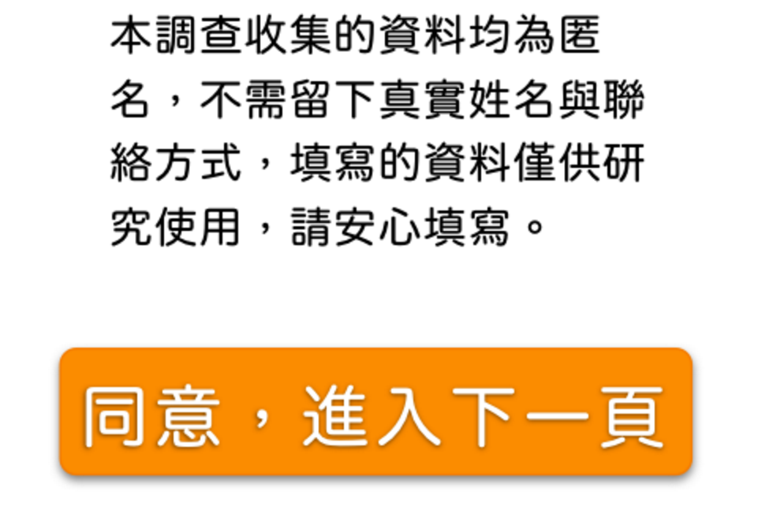

Posted by Eva Yu 游硯雅 · Jul 24, 2017 at 4:34 PM {優化流程} B-a系列  迴圈實錄 • Download 嗨嗨大家～目前B-a系列流程貌似還有一些使用上會令人困惑的地方（請見上方zen解說影片）～所以想請大家重新感受一下， 看看是否還有漏網之魚，想想是否有合適解法🙋🙋🙋我們明天來個快速的線上討論～例如：迴圈問題解法一E-3取消右上關閉按鈕。增加『不同意，離開』按鈕，避免陷入迴圈。  螢幕快照 2017-07-24 下午5.53.09.png 109 KB • Download ： 👏 Comments & Events 鄭雅方, 資深設計師 同意後進入下一頁，進入E-4教學，目前新芽做的是錯的喔～E-4應該是仿cake形式（引言頁）的教學，就不會有關閉，只會有「按下一頁繼續」。我已經開了issue請他們做修改～https://fox.25sprout.com:10088/alex/65survey/issues/31 Jul 25, 2017 at 12:03 AM Notified 3 people 鄭雅方, 資深設計師 另外，我覺得E-3這樣修改是可以的喔！不過，若E-3按鈕改成「不同意，離開」，按下後還是回到原畫面，其實意思跟原本的關閉是一樣的。更貼近「不同意，離開」按鈕，應該是要按下後把整個視窗關掉。 Jul 25, 2017 at 12:05 AM Notified 3 people 鄭雅方, 資深設計師 總結這邊的問題及處理方式：1. E-1教學應該只出現在A、B-a，B-b不用再出現一次。（目前demo版本問題，已開issue）2. E-4教學應該以引言頁方式呈現，出現在「同意，進入下一頁」之後。（目前demo版本問題，已開issue）3. E-3 可以新增「不同意離開」按鈕，按下後可能是a. 僅關掉E-3視窗 或 b.按下後關掉整個視窗。（待處理） 👏 👏 Jul 25, 2017 at 12:09 AM Notified 3 people Zen 育涓 張, 產品經理 大家的討論棒棒，雅方可以把以上的issue 的連結加上日期截止日7/27 嗎？我稍晚發信跟alex說哪些我們希望優先處理～ Jul 25, 2017 at 2:42 AM Notified 3 people 鄭雅方, 資深設計師 那就請 Meng，肖易萌 Eva 同步修改E-3並上傳1. mockup2. 更新zeplin3. sketch完成後我再開E-3修改的issue！ps.小雞，「不同意，離開」的按鈕應該是沒有陰影的？確認一下。 Jul 25, 2017 at 2:44 AM Notified 3 people Eva Yu 游硯雅, 碩士生 我早上和我室友一起玩了一下，得到一些頁面上的小發現（不過只有一個人所以僅供參考：Ｐ）1）因為手機版的E1教學上下會被擋住，popup形式讓他不太敢往下滑（且目前版本滑動popup連背景也會一起動，滑起來怪怪的），而且目前E1的教學播放鈕做在白色區塊，和gif內的播放鈕距同時出現一個會動一個不會動讓他一時間有點困惑（但我隨後出示雅方後來建議的有灰色框線的版本他就看懂了），而下方只露出一點點而且正在動的往下滑教學第一直覺像是下載免費app中會附帶的頁面底部廣告2）調查聲明用popup形式較缺乏正式感，且有點強迫中獎的感覺3)覺得『播放』按鈕=下方gif播放中或是按下會有聲音所以我試著調整了下E1與E3（細節需再調整）不知道會不會好一點E1右上角關閉按鈕取消，降低用戶直接關閉頁面機會，改為『好，我知道了』按鈕放在最下方不露出背景，讓使用者專注在gif上為操作教學加上固定的小標題  E1 • Download E3右上角關閉按鈕取消，降低用戶直接關閉頁面機會，改為『不同意，離開』按鈕不露出背景，並且重複露出活動名與主辦方logo增加安心感  螢幕快照 2017-07-25 上午11.43.53.png 144 KB • Download 👏 Jul 25, 2017 at 3:52 AM Notified 3 people 鄭雅方, 資深設計師 關於E-1，小雞建議的完全擋住原本頁面的做法，我認為容易讓使用者誤以為迷路。其實我們原本的設計，兩個教學是在一屏呈現的，不會有需要往下滑動的問題，我覺得這部分可以請新芽調整。但我認為把「關閉」拿掉，改成「我知道了」應該會比較好。關於E-3，同意聲明使用pop-up的做法並不少見，但要調整也不是不行～的確會覺得比較正式！另外如上述，加入「不同意，離開」按鈕確實比較好。基於時間上的考量，總結我的想法E-1 ： 將關閉按鈕拿掉，新增「好，我知道了」按鈕，其他不變。但要請新芽讓兩個gif在一屏呈現。E-3：將關閉按鈕拿掉，新增「不同意，離開」按鈕，其他不變，考量開發時程，維持pop-up形式。 👏 Jul 25, 2017 at 4:17 AM Notified 3 people Zen 育涓 張, 產品經理 小雞的作法很好，建議大家多拿給親人朋友試試歐！ E-1 ： 將關閉按鈕拿掉，新增「好，我知道了」按鈕 （+1） E-3：將關閉按鈕拿掉，新增「不同意，離開」按鈕 （＋1）另外，大家可以觀察一下 action btn 在半透明的背景顯示下的效果，是否把btn包在白背景看起來比較清楚？  btn 後面是半透明背景 • Download  btn 後面是白背景的延伸 • Download Jul 25, 2017 at 4:56 AM Notified 4 people 鄭雅方, 資深設計師 既然知道有明顯問題，那我們就先修改如何？E-1 ： 將關閉按鈕拿掉，新增「好，我知道了」，按鈕後面有白色背景E-3：將關閉按鈕拿掉，新增「不同意，離開」按鈕 ，按鈕後面有白色背景不知道如果今天提出修改，是否可以趕得上7/28的測試。 👏 👏 Jul 25, 2017 at 5:03 AM Notified 4 people Zen 育涓 張, 產品經理 我們先提，然後跟新芽溝通看看 鄭雅方 ，雅方開好issue 們後，可以把要🔗列出來嗎？我來一併問新芽。 👏 Jul 25, 2017 at 6:45 AM Notified 4 people 鄭雅方, 資深設計師 ・修改示意圖E-1 ： 將關閉按鈕拿掉，新增「好，我知道了」，按鈕在白色框中。示意圖：https://goo.gl/Mo4NqtE-3 ：將關閉按鈕拿掉，新增「不同意，離開」按鈕 ，按鈕在白色框中。示意圖：https://goo.gl/uGFAZg・目前已開的issue1. E-1 位置應放置於A、B-a，B-b不用放 https://fox.25sprout.com:10088/alex/65survey/issues/442. E-4 仿照cake內引言頁形式https://fox.25sprout.com:10088/alex/65survey/issues/313. E-1 在一屏呈現，且不能往下滑動https://fox.25sprout.com:10088/alex/65survey/issues/45 👏 Jul 25, 2017 at 7:50 AM Notified 4 people 鄭雅方, 資深設計師 Eva Meng，肖易萌 請同步修改E-1 ： 將關閉按鈕拿掉，新增「好，我知道了」，按鈕在白色框中。示意圖：https://goo.gl/Mo4NqtE-3 ：將關閉按鈕拿掉，新增「不同意，離開」按鈕 ，按鈕在白色框中。示意圖：https://goo.gl/uGFAZg Jul 25, 2017 at 11:46 AM Notified 4 people
鄭雅方, 資深設計師 同意後進入下一頁，進入E-4教學，目前新芽做的是錯的喔～E-4應該是仿cake形式（引言頁）的教學，就不會有關閉，只會有「按下一頁繼續」。我已經開了issue請他們做修改～https://fox.25sprout.com:10088/alex/65survey/issues/31 Jul 25, 2017 at 12:03 AM Notified 3 people
鄭雅方, 資深設計師 另外，我覺得E-3這樣修改是可以的喔！不過，若E-3按鈕改成「不同意，離開」，按下後還是回到原畫面，其實意思跟原本的關閉是一樣的。更貼近「不同意，離開」按鈕，應該是要按下後把整個視窗關掉。 Jul 25, 2017 at 12:05 AM Notified 3 people
鄭雅方, 資深設計師 總結這邊的問題及處理方式：1. E-1教學應該只出現在A、B-a，B-b不用再出現一次。（目前demo版本問題，已開issue）2. E-4教學應該以引言頁方式呈現，出現在「同意，進入下一頁」之後。（目前demo版本問題，已開issue）3. E-3 可以新增「不同意離開」按鈕，按下後可能是a. 僅關掉E-3視窗 或 b.按下後關掉整個視窗。（待處理） 👏 👏 Jul 25, 2017 at 12:09 AM Notified 3 people
Zen 育涓 張, 產品經理 大家的討論棒棒，雅方可以把以上的issue 的連結加上日期截止日7/27 嗎？我稍晚發信跟alex說哪些我們希望優先處理～ Jul 25, 2017 at 2:42 AM Notified 3 people
鄭雅方, 資深設計師 那就請 Meng，肖易萌 Eva 同步修改E-3並上傳1. mockup2. 更新zeplin3. sketch完成後我再開E-3修改的issue！ps.小雞，「不同意，離開」的按鈕應該是沒有陰影的？確認一下。 Jul 25, 2017 at 2:44 AM Notified 3 people
Eva Yu 游硯雅, 碩士生 我早上和我室友一起玩了一下，得到一些頁面上的小發現（不過只有一個人所以僅供參考：Ｐ）1）因為手機版的E1教學上下會被擋住，popup形式讓他不太敢往下滑（且目前版本滑動popup連背景也會一起動，滑起來怪怪的），而且目前E1的教學播放鈕做在白色區塊，和gif內的播放鈕距同時出現一個會動一個不會動讓他一時間有點困惑（但我隨後出示雅方後來建議的有灰色框線的版本他就看懂了），而下方只露出一點點而且正在動的往下滑教學第一直覺像是下載免費app中會附帶的頁面底部廣告2）調查聲明用popup形式較缺乏正式感，且有點強迫中獎的感覺3)覺得『播放』按鈕=下方gif播放中或是按下會有聲音所以我試著調整了下E1與E3（細節需再調整）不知道會不會好一點E1右上角關閉按鈕取消，降低用戶直接關閉頁面機會，改為『好，我知道了』按鈕放在最下方不露出背景，讓使用者專注在gif上為操作教學加上固定的小標題  E1 • Download E3右上角關閉按鈕取消，降低用戶直接關閉頁面機會，改為『不同意，離開』按鈕不露出背景，並且重複露出活動名與主辦方logo增加安心感  螢幕快照 2017-07-25 上午11.43.53.png 144 KB • Download 👏 Jul 25, 2017 at 3:52 AM Notified 3 people
鄭雅方, 資深設計師 關於E-1，小雞建議的完全擋住原本頁面的做法，我認為容易讓使用者誤以為迷路。其實我們原本的設計，兩個教學是在一屏呈現的，不會有需要往下滑動的問題，我覺得這部分可以請新芽調整。但我認為把「關閉」拿掉，改成「我知道了」應該會比較好。關於E-3，同意聲明使用pop-up的做法並不少見，但要調整也不是不行～的確會覺得比較正式！另外如上述，加入「不同意，離開」按鈕確實比較好。基於時間上的考量，總結我的想法E-1 ： 將關閉按鈕拿掉，新增「好，我知道了」按鈕，其他不變。但要請新芽讓兩個gif在一屏呈現。E-3：將關閉按鈕拿掉，新增「不同意，離開」按鈕，其他不變，考量開發時程，維持pop-up形式。 👏 Jul 25, 2017 at 4:17 AM Notified 3 people
Zen 育涓 張, 產品經理 小雞的作法很好，建議大家多拿給親人朋友試試歐！ E-1 ： 將關閉按鈕拿掉，新增「好，我知道了」按鈕 （+1） E-3：將關閉按鈕拿掉，新增「不同意，離開」按鈕 （＋1）另外，大家可以觀察一下 action btn 在半透明的背景顯示下的效果，是否把btn包在白背景看起來比較清楚？  btn 後面是半透明背景 • Download  btn 後面是白背景的延伸 • Download Jul 25, 2017 at 4:56 AM Notified 4 people
鄭雅方, 資深設計師 既然知道有明顯問題，那我們就先修改如何？E-1 ： 將關閉按鈕拿掉，新增「好，我知道了」，按鈕後面有白色背景E-3：將關閉按鈕拿掉，新增「不同意，離開」按鈕 ，按鈕後面有白色背景不知道如果今天提出修改，是否可以趕得上7/28的測試。 👏 👏 Jul 25, 2017 at 5:03 AM Notified 4 people
Zen 育涓 張, 產品經理 我們先提，然後跟新芽溝通看看 鄭雅方 ，雅方開好issue 們後，可以把要🔗列出來嗎？我來一併問新芽。 👏 Jul 25, 2017 at 6:45 AM Notified 4 people
鄭雅方, 資深設計師 ・修改示意圖E-1 ： 將關閉按鈕拿掉，新增「好，我知道了」，按鈕在白色框中。示意圖：https://goo.gl/Mo4NqtE-3 ：將關閉按鈕拿掉，新增「不同意，離開」按鈕 ，按鈕在白色框中。示意圖：https://goo.gl/uGFAZg・目前已開的issue1. E-1 位置應放置於A、B-a，B-b不用放 https://fox.25sprout.com:10088/alex/65survey/issues/442. E-4 仿照cake內引言頁形式https://fox.25sprout.com:10088/alex/65survey/issues/313. E-1 在一屏呈現，且不能往下滑動https://fox.25sprout.com:10088/alex/65survey/issues/45 👏 Jul 25, 2017 at 7:50 AM Notified 4 people
鄭雅方, 資深設計師 Eva Meng，肖易萌 請同步修改E-1 ： 將關閉按鈕拿掉，新增「好，我知道了」，按鈕在白色框中。示意圖：https://goo.gl/Mo4NqtE-3 ：將關閉按鈕拿掉，新增「不同意，離開」按鈕 ，按鈕在白色框中。示意圖：https://goo.gl/uGFAZg Jul 25, 2017 at 11:46 AM Notified 4 people
 👏
👏
不過，若E-3按鈕改成「不同意，離開」，按下後還是回到原畫面，其實意思跟原本的關閉是一樣的。更貼近「不同意，離開」按鈕，應該是要按下後把整個視窗關掉。
1. E-1教學應該只出現在A、B-a，B-b不用再出現一次。（目前demo版本問題，已開issue）
2. E-4教學應該以引言頁方式呈現，出現在「同意，進入下一頁」之後。（目前demo版本問題，已開issue）
3. E-3 可以新增「不同意離開」按鈕，按下後可能是a. 僅關掉E-3視窗 或 b.按下後關掉整個視窗。（待處理）
雅方可以把以上的issue 的連結加上日期截止日7/27 嗎？
我稍晚發信跟alex說哪些我們希望優先處理～
1. mockup
2. 更新zeplin
3. sketch
完成後我再開E-3修改的issue！
ps.小雞，「不同意，離開」的按鈕應該是沒有陰影的？確認一下。
我早上和我室友一起玩了一下，得到一些頁面上的小發現（不過只有一個人所以僅供參考：Ｐ）
1）因為手機版的E1教學上下會被擋住，popup形式讓他不太敢往下滑（且目前版本滑動popup連背景也會一起動，滑起來怪怪的），而且目前E1的教學播放鈕做在白色區塊，和gif內的播放鈕距同時出現一個會動一個不會動讓他一時間有點困惑（但我隨後出示雅方後來建議的有灰色框線的版本他就看懂了），而下方只露出一點點而且正在動的往下滑教學第一直覺像是下載免費app中會附帶的頁面底部廣告
2）調查聲明用popup形式較缺乏正式感，且有點強迫中獎的感覺
3)覺得『播放』按鈕=下方gif播放中或是按下會有聲音
所以我試著調整了下E1與E3（細節需再調整）不知道會不會好一點
E1
右上角關閉按鈕取消，降低用戶直接關閉頁面機會，改為『好，我知道了』按鈕放在最下方
不露出背景，讓使用者專注在gif上
為操作教學加上固定的小標題
右上角關閉按鈕取消，降低用戶直接關閉頁面機會，改為『不同意，離開』按鈕
不露出背景，並且重複露出活動名與主辦方logo增加安心感
關於E-3，同意聲明使用pop-up的做法並不少見，但要調整也不是不行～的確會覺得比較正式！另外如上述，加入「不同意，離開」按鈕確實比較好。
基於時間上的考量，總結我的想法
E-1 ： 將關閉按鈕拿掉，新增「好，我知道了」按鈕，其他不變。但要請新芽讓兩個gif在一屏呈現。
E-3：將關閉按鈕拿掉，新增「不同意，離開」按鈕，其他不變，考量開發時程，維持pop-up形式。
另外，大家可以觀察一下 action btn 在半透明的背景顯示下的效果，是否把btn包在白背景看起來比較清楚？
E-1 ： 將關閉按鈕拿掉，新增「好，我知道了」，按鈕後面有白色背景
E-3：將關閉按鈕拿掉，新增「不同意，離開」按鈕 ，按鈕後面有白色背景
不知道如果今天提出修改，是否可以趕得上7/28的測試。
E-1 ： 將關閉按鈕拿掉，新增「好，我知道了」，按鈕在白色框中。示意圖：https://goo.gl/Mo4Nqt
E-3 ：將關閉按鈕拿掉，新增「不同意，離開」按鈕 ，按鈕在白色框中。示意圖：https://goo.gl/uGFAZg
・目前已開的issue
1. E-1 位置應放置於A、B-a，B-b不用放 https://fox.25sprout.com:10088/alex/65survey/issues/44
2. E-4 仿照cake內引言頁形式
https://fox.25sprout.com:10088/alex/65survey/issues/31
3. E-1 在一屏呈現，且不能往下滑動
https://fox.25sprout.com:10088/alex/65survey/issues/45
E-1 ： 將關閉按鈕拿掉，新增「好，我知道了」，按鈕在白色框中。示意圖：https://goo.gl/Mo4Nqt
E-3 ：將關閉按鈕拿掉，新增「不同意，離開」按鈕 ，按鈕在白色框中。示意圖：https://goo.gl/uGFAZg